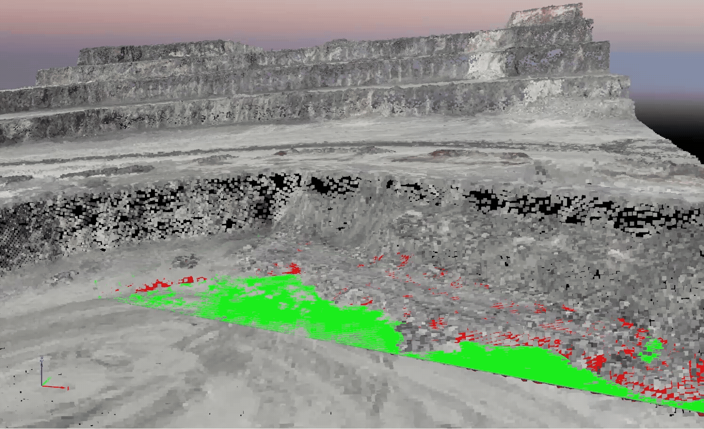

UAV SPATIAL AI · 2024–2026 · FLAGSHIP
GeoInpainter — Vehicle-free DEM generation for open-pit mines via UAV image inpainting
Heavy equipment captured in UAV surveys distorts photogrammetric terrain models. I built an automated pipeline — YOLOv8 detection → SAM masking → deep inpainting (LaMa / MAT / DeepFillv2) → SfM reconstruction — that removes equipment before DEM generation, and quantified the 2D-quality vs. 3D-geometry trade-off that inpainting introduces into tie-point matching.
MAE 1.276→0.111 m (loader)
~10× faster than manual editing
GUI deployed for field use
YOLOv8 · SAM · LaMa · SfM · DJI Mini 4 Pro · Pix4D